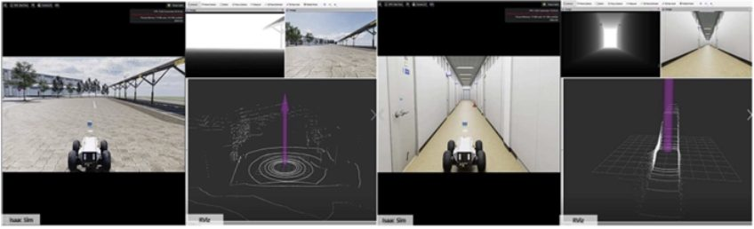
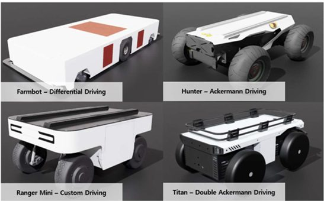

TL;DR
- 3D 스캐너로 직접 스캔한 연구소 환경을 Isaac Sim에 재구성하고, LiDAR 6종·IMU의 ROS 연동과 Ranger Mini 로봇의 ROS 제어 테스트 노드를 구현했습니다.
- 6인 팀의 전체 업무 스케줄을 조율하고 모듈 구조를 통합하는 프로젝트 리딩을 맡아 최종 결과물을 완성했습니다.
- 이 경험은 이후 산업 현장 디지털 트윈(금형 폴리싱)과 현재 재직 중 회사의 검증 환경 구축으로 이어지는 출발점이 되었습니다.
PROBLEM시뮬레이션이 필요한 이유
온실처럼 계절·날씨에 따라 상태가 변하는 실외 환경에서는 자율주행 알고리즘을 반복 검증하기 어렵습니다. 실제 환경을 충실히 복제한 시뮬레이션과, 기존 ROS 스택을 그대로 연결할 수 있는 인터페이스가 있어야 알고리즘 개발–검증 사이클을 현장 방문 없이 돌릴 수 있습니다.
METHOD환경·센서·로봇의 3요소 구축
- 환경 — 3D 스캐너로 스캔한 실제 연구소 공간을 정리해 Isaac Sim 환경으로 재구성
- 센서 — 서로 다른 스캔 패턴·채널의 LiDAR 6종과 IMU를 구현하고 ROS 토픽으로 출력 (LaserScan·PointCloud2)
- 로봇 — Ranger Mini 로봇 모델과 ROS 제어 테스트 노드 구현, 4가지 구동 방식(Differential·Ackermann·Custom·Double Ackermann) 로봇 모델 제작


ROLE프로젝트 리딩
환경·센서·로봇 파트로 나뉜 6인의 작업을 하나의 시뮬레이션으로 통합하는 역할을 맡았습니다. 파트별 인터페이스(토픽 이름, 좌표계, 업데이트 주기)를 먼저 합의하고 주 단위로 통합 시점을 관리해, 개별 모듈이 완성된 뒤 통합에서 막히는 일 없이 일정 안에 최종 결과물을 완성했습니다.
RESULT
- LiDAR 6종·IMU·로봇 제어가 연동된 Isaac Sim 자율주행 시뮬레이션 환경 납품
- ETRI 연구과제 "고정밀 3D 온실 모델 기반 온실자율주행 시뮬레이션 환경 구축 및 ROS 연동 인터페이스 개발" 완수
DEMO시연 영상
환경·센서·로봇 통합 시연